In this step we will prepare the environment for the hands on exercises
- Install OneAgent
- Enable OpenTelemetry instrumentation
- Clone the repos for the Java and Go exercise
Step 1: Install OneAgent
- Access the Dynatrace tenant provided to you
- In your RDP Windows instance provided to you, download the Windows-based OneAgent from Deploy Dynatrace menu
- Start the installation with default settings
Step 2: Enable OpenTelemetry and OpenTracing instrumentation
- Go to your environment, under
Settings>Server-side service monitoring>Deep Monitoring>OpenTelemetry and OpenTracing - You might also be required to go to
New OneAgent featuresto enable some flags 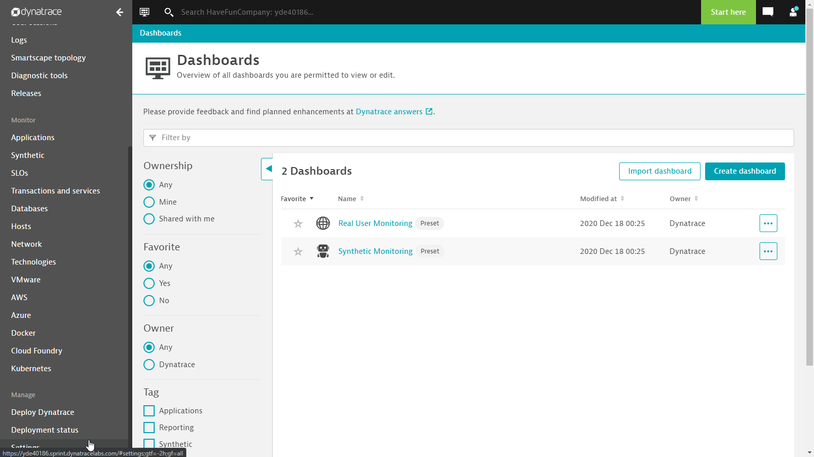
Step 3: Clone the repos
- Launch Visual Studio Code
- Click on
clone repository, and copy/enter
https://github.com/Dynatrace-APAC/vhot2021.git
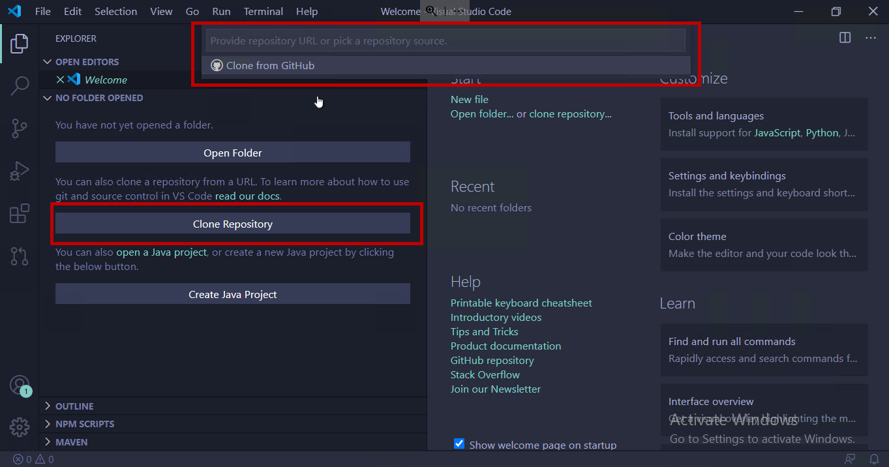
- Select the folder (e.g. Documents folder) to store the cloned repo

- If prompted to open the cloned repository, click on
Open
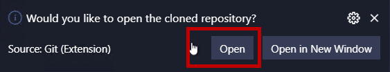
You've arrived
- You are now ready to start the hands on! 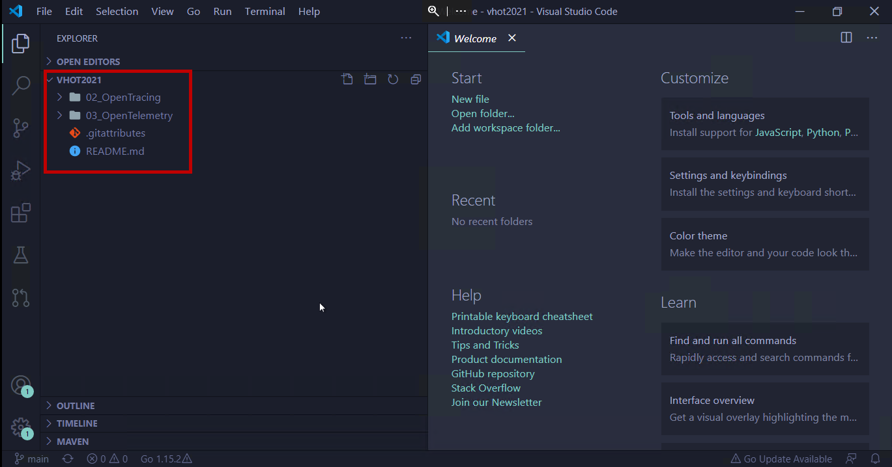
In this step we will compile our Java Springboot application and explore the out-of-the-box instrumentation of the OneAgent
Step 1: Compile and run the application
- Edit
hazelcast-client.yamlin VHOT2021 > 02_OpenTracing > src\main > resources 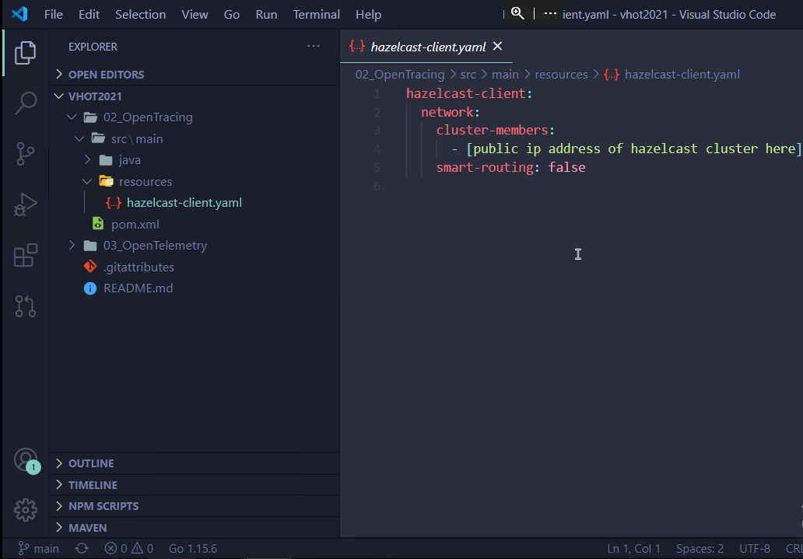 - Input the public IP address given to you on the Zoom chat.
- Save the file, example
CTRL+S - Open up a Terminal from the top menu bar 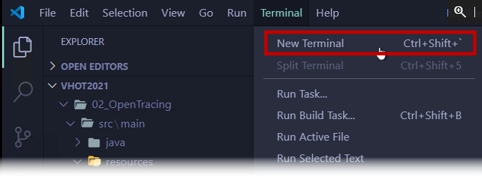
- Change diretory to
02_OpenTracingand run this commandmvn spring-boot:runpowershell
PS C:\Users\dtu.training\Documents\vhot2021> cd 02_OpenTracing
PS C:\Users\dtu.training\Documents\vhot2021\02_OpenTracing> mvn spring-boot:run
- Check that the program compiles without any errors and it connects to the HazelCast nodes - Open a new terminal tab 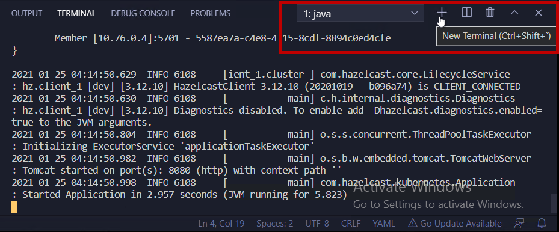 - Entercurl.exe http://localhost:8080/get?key=testkey- You will observe a response of{"response":null}. This is normal as you have not populated the HazelCast map with entries.powershell
PS C:\Users\dtu.training\Documents\vhot2021> curl.exe http://localhost:8080/get?key=testkey
{"response":null}
Step 2: Populate the HazelCast instance with entries and retrieve the data
- Enter
curl.exe http://localhost:8080/pop1powershell
PS C:\Users\dtu.training\Documents\vhot2021> curl.exe http://localhost:8080/pop1
{"response":"100 entry inserted to the map with key: 1.2.3.4-* , starting with 1 "}
- Retrieve the data with the key format as-1 powershell
PS C:\Users\dtu.training\Documents\vhot2021> curl.exe http://localhost:8080/get?key=1.2.3.4-1
{"response":1.2.3.4-1} - Execute a few more
gettransactions with different keys (you can use the any number from 1 to 99). If you use a number outside of the range, you will get a response ofnull - Once done, go back to the first terminal tab and terminate the Java program by using
CTRL+C
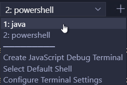
[INFO] ------------------------------------------------------------------------
[INFO] BUILD SUCCESS
[INFO] ------------------------------------------------------------------------
[INFO] Total time: 17:53 min
[INFO] Finished at:
[INFO] ------------------------------------------------------------------------
Terminate batch job (Y/N)?
Enter Y
Step 3: Explore Dynatrace PurePaths after auto instrumentation
- Access your Dynatrace tenant in the browser
- Go to Transactions and Services > CommandController > Purepaths 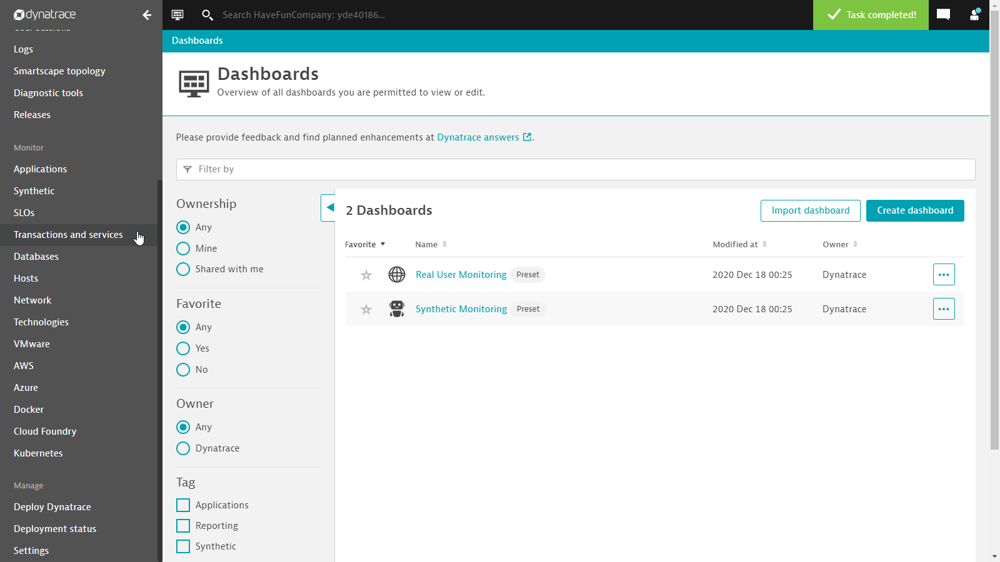
- Choose the /pop1 transaction 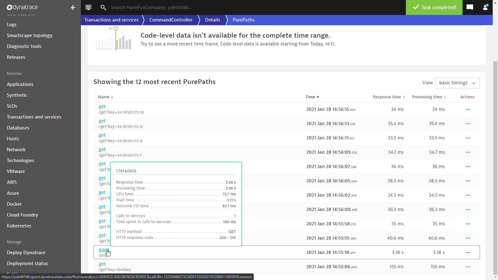
- You will observe that the totoal transaction response time was 3 secs, but all of the Java method calls were less than 30 ms. 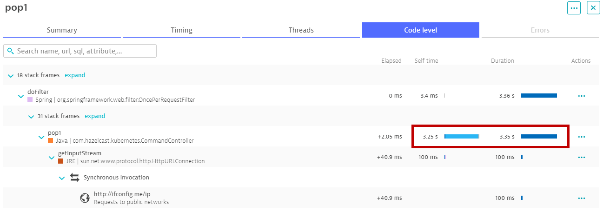
- Clearly something else is responsible
In this step we extend the Java SpringBoot application with an available OpenTracing instrumentation libary.
Step 1: Decorate the java code with the HazelCast OpenTracing libaries
- Open
CommandController.javafrom src\main > java\com\hazelcast\kubernetes 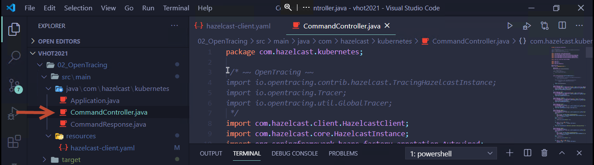 - Import the OpenTracing Libraries - Comment line 3 and 7
// /* ~~ OpenTracing ~~
import io.opentracing.contrib.hazelcast.TracingHazelcastInstance;
import io.opentracing.Tracer;
import io.opentracing.util.GlobalTracer;
//*/
- Initialze the OpenTracing GlobalTracer - Comment line 28 and 32
// /* ~~ OpenTracing ~~
public Tracer initTracer() {
return GlobalTracer.get();
}
// */
- Enhance or warp the HazelcastInstance with TracingHazelcastInstance - Comment line 35 and 42
// /* ~~ OpenTracing ~~
if (hazelcastInstance instanceof TracingHazelcastInstance) {
return hazelcastInstance;
}
hazelcastInstance = new TracingHazelcastInstance(
HazelcastClient.newHazelcastClient(),
false);
// */
- Save the file, example
CTRL+S
Step 2: Compile and run the application
- Ensure that you are in the first terminal tab and run this command
mvn spring-boot:run
PS C:\Users\dtu.training\Documents\vhot2021\02_OpenTracing> mvn spring-boot:run
- Check that the program compiles without any errors and it connects to the HazelCast nodes
Step 3: Populate the HazelCast instance with new entries and retrieve the data
- Switch to the 2nd terminal tab
- Enter a few
gettransactions with any values for the key, for example
PS C:\Users\dtu.training\Documents\vhot2021> curl.exe http://localhost:8080/get?key=samplekey
{"response":null}
PS C:\Users\dtu.training\Documents\vhot2021> curl.exe http://localhost:8080/get?key=1.2.3.4-1
{"response":1.2.3.4-1}
- Now, populate the HazelCast cache with new entries, enter
curl.exe http://localhost:8080/pop2
PS C:\Users\dtu.training\Documents\vhot2021> curl.exe http://localhost:8080/pop2
{"response":"100 entry inserted to the map with key: 1.2.3.4-* , starting with 200 "}
- Retrieve the data with the key format as
-200
PS C:\Users\dtu.training\Documents\vhot2021> curl.exe http://localhost:8080/get?key=1.2.3.4-200
{"response":1.2.3.4-200}
- Execute a few more
gettransactions with different keys (from 200 until 299)
Step 4: Explore Dynatrace PurePaths after implementing OpenTracing libaries
- Access your Dynatrace tenant in the browser
- Go to Transactions and Services > CommandController > Purepaths
- Choose the /pop2 transaction
- You will observe that we are getting more visibility into the application execution - we are seeing 100 calls made to hazelcast
putcommand, with each command taking about 30 ms, and 100 calls of 30 ms will compound to almost 3 secs! 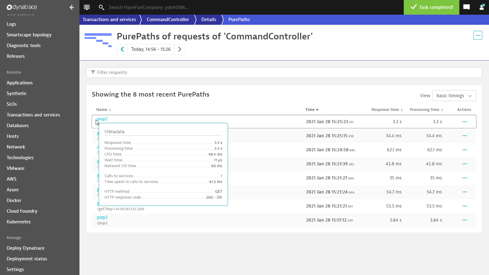
In this step we extend a sample program with an additional OpenTelemetry Span. The sample consists of an HTTP Server which is able to calculate any Fibonacci number. The result of that calculation is getting sent to a Kafka Broker.
Prerequisites
- OneAgent is already installed on your Workstation
- OpenTelemetry instrumentation for Golang has been enabled for your Dynatrace Environment (
Settings>Server-side service monitoring>Deep Monitoring>OpenTelemetry and OpenTracing) 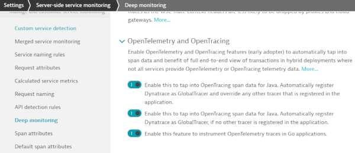
Step 1: Compile and launch the program
- Start
Visual Studio Codeif it has not been started yet and choose the03_OpenTelemetrydirectory of the previously checked out GitHub Repository. - In Visual Studio Code open up a Terminal
- Ensure that you are already in the
03_OpenTelemetrydirectory, else change diretory to03_OpenTelemetrydirectory and compile the program using the command linego build. This produces a file namefib.exewithin the current directory.
PS C:\Users\dtu.training\Documents\vhot2021> cd 03_OpenTelemetry
PS C:\Users\dtu.training\Documents\vhot2021\03_OpenTelemetry> go build
- Launch
fib.exevia your current Terminal- Windows Security likely will ask you to confirm, that this program is allowed to listen on incoming socket connections.
- In your Dynatrace Environment navigate to
Hostsand select the Workstation you're working on - Use either your Browser or
curl http://localhost:28080/fib?n=3within a new Terminal to access your new HTTP Service - Wait until
fib.exeshows up among the Processes on this host - Dynatrace by default has decided to disable monitoring for this executable (
Process isn't monitored). Click on the linkmonitored technologiesand override the defaults for this Process Group. 
- Within your Terminal press
Ctrl-Cto shut downfib.exe. Launchfib.exeagain. - Dynatrace in some cases tells you afterwards that this process needs to get restarted yet another time. Within your Terminal press
Ctrl-Cto shut downfib.exe. Launchfib.exeagain. 
- Use either your Browser or
curl http://localhost:28080/fib?n=3within a new Terminal to access your new HTTP Service - Wait for a couple of seconds. After that you should see a PurePath for the HTTP request you just sent to your HTTP Service.
- The contents of this PurePath is produced by out of the box Sensors of OneAgent
- 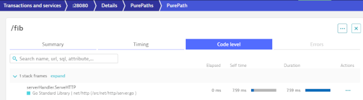
Step 2: Introduce OpenTelemetry to your Application
- Shut down
fib.exeusingCtrl-Cwithin your Terminal if you haven't done so already - Lines 16-18 in
main.goare required to initialize OpenTelemetry and configure a minimal Span Exporter- Delete Line 15 and Line 19 in order to remove the comment. The function
main()should now look like this:
func main() { if err := initGlobalTracer(nil); err != nil { panic(err) } /* LESSON 05: EXPORTING METRICS initMetricsProvider() */ http.HandleFunc("/fib", FibServer) http.HandleFunc("/favicon.ico", faviconHandler) http.ListenAndServe(":28080", nil) }- Within function
FibServerthere exists currently commented out code. These lines are accessing the OpenTelemetry API. - Delete Lines 28 and 35 in order to enable the currently commented out code. The function
FibServershould now look like this:go
// FibServer handles HTTP requests for fibonacci calculation
func FibServer(w http.ResponseWriter, r *http.Request) {
tracer := global.Tracer("http")
ctx := context.Background()
var span trace.Span
ctx, span = tracer.Start(ctx, "http-request")
defer span.End()
if n, err := getIntParam(r); err != nil {
http.Error(w, err.Error(), http.StatusBadRequest)
} else {
result, numIterations := fibonacci.New().Calc(n)
reportMetric(n, numIterations)
kafka.Send(result)
w.Write([]byte(fmt.Sprintf("%d", result)))
}
}
- Delete Line 15 and Line 19 in order to remove the comment. The function
- Press
Ctrl-Sto save your changes inmain.go - In your Terminal, compile the program using the command line
go build - Launch
fib.exevia your current Terminal - Use either your Browser or
curl http://localhost:28080/fib?n=3within a new Terminal to access your new HTTP Service
You've arrived
- The PurePath you just created now contains an additional PurePath Node created via OpenTelemetry

The OpenTelemetry Span we just created is more or less redundant. The HTTP Sensor of Dynatrace already created the necessary PurePath Node. Whatever we have introduced via OpenTelemetry doesn't really enrich our experience. In this task our goal is to grant users of Dynatrace deeper insight into what is going on when the Fibonacci number is getting calculated.
Prerequisites
- You have completed the previous task
Producing a simple Span and report it to Dynatrace
Step 1: Introduce OpenTelemetry functionality into the Fibonacci function
- Delete Line 43 and Line 82 in
fibonacci.go. It removes the comments around a new version of our Fibonacci code - Delete Lines 12-41 in
fibonacci.go. This is the old version of our Fibonacci code. We don't need it anymore. - The source code for the Fibonacci Calculator should now look like this:
// Fibonacci calculates fibonacci numbers
type Fibonacci interface {
Calc(n int) (int, int) // Calc has no documentation
}
// New creates a new Fibonacci Calculator
func New(ctx context.Context) Fibonacci {
return &fibonacci{Context: ctx}
}
type fibonacci struct {
Context context.Context
}
// Calc calculates the n-th fibonacci number
// The first return value is the fibonacci number to be calculated
// The second return value reports the number of recursive invocation that were required in order to calculate the result
func (f *fibonacci) Calc(n int) (int, int) {
var span trace.Span
tracer := global.Tracer("")
f.Context, span = tracer.Start(f.Context, fmt.Sprintf("fib(%d)", n))
defer span.End()
if n < 3 {
span.SetAttributes(label.Key("fib.result").Int(1))
return 1, 1
}
a, iterA := f.Calc(n - 1)
b, iterB := f.Calc(n - 2)
result := a + b
span.SetAttributes(label.Key("fib.result").Int(result))
return result, iterA + iterB + 1
}
- Press
Ctrl-Sin order to save the changes you've made infibonacci.go - Because of these changes we are now getting an error in
main.go. Creating a Fibonacci Calculator now requires an additional parameter - Delete Line 45 and 65 in
main.go. It gets rid of the comments around a new version of the functionFibServer - Delete Lines 26-43 in
main.go. This is the old version of functionFibServer. We don't need it anymore. - Function
FibServershould now look like this:
// FibServer handles HTTP requests for fibonacci calculation
func FibServer(w http.ResponseWriter, r *http.Request) {
tracer := global.Tracer("http")
ctx := context.Background()
var span trace.Span
ctx, span = tracer.Start(ctx, "http-request")
defer span.End()
if n, err := getIntParam(r); err != nil {
http.Error(w, err.Error(), http.StatusBadRequest)
} else {
result, numIterations := fibonacci.New(ctx).Calc(n)
reportMetric(n, numIterations)
kafka.Send(result)
w.Write([]byte(fmt.Sprintf("%d", result)))
}
}
- Press
Ctrl-Sin order to save the changes you've made inmain.go - Shut down
fib.exeusingCtrl-Cwithin your Terminal if you haven't done so already. - In your Terminal, compile the program using the command line
go build - Launch
fib.exevia your current Terminal - Use either your Browser or
curl http://localhost:28080/fib?n=3within a new Terminal to access your new HTTP Service - The PurePath you just created now contains an additional PurePath Node per invocation of the Fibonacci Calculator's
Calcfunction.
Step 2: Tell Dynatrace which OpenTelemetry Attributes are of interest for you
- In Dynatrace navigate to
Settings>Server-side service monitoring>Span Attributes. Add an additional item here. The key you want Dynatrace to capture isfib.result. 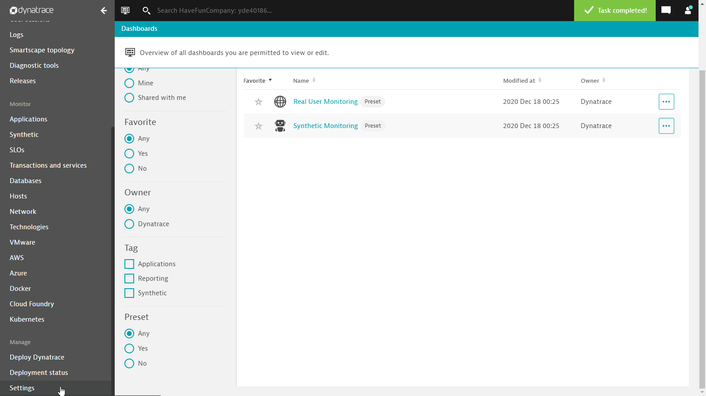 - Use either your Browser or
curl http://localhost:28080/fib?n=3within a new Terminal to access your new HTTP Service 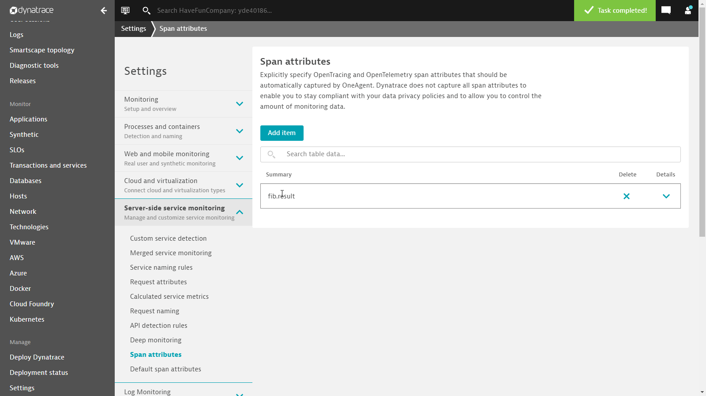
Step 3: Capture a Request Attribute based on the OpenTelemetry Key
- In Dynatrace navigate to
Settings>Server-side service monitoring>Request Attributes. - The Data Source for our Request Attribute needs to be a
Span Attribute. - The Key of the Request Attribute is called
fib.result(unless you have chosen a different name) - We are just interested in the last value within the PurePath - any intermediate results should be ignored.
- Remember to click on
SAVEin order for the Request Attribute to be registered!
- Use either your Browser or
curl http://localhost:28080/fib?n=3within a new Terminal to access your new HTTP Service
You've arrived
- The PurePath you just created now contains an additional PurePath Node per invocation of the Fibonacci Calculator's
Calcfunction. In addition the Request Attribute you just created is also available on every PurePath.
Compile Time instrumentation might be fun to some extent, but it's usually not your job to do that. The idea behind OpenTelemetry is that third party software either already comes fully instrumented (with all the necessary source code for OpenTelemetry included) or alternatively is getting provided as an optional feature via a helper library.
Prerequisites
- You have completed the previous task
Child Spans and Span Attributes
Step 1: Introduce OpenTelemetry via instrumentation library
- Line 12 in
kafka.gorefers to the Kafka Broker that is supposed to receive messages. Replace it with the URL you've been given from your instructor at the beginning of this task. - Line 37 in
kafka.gorepresents the magic that's required to introduce OpenTelemetry Tracing capabilities to an existing Kafka Producer- Delete Lines 36 and 38 in order to get rid of the comment
- The function
newSyncProducershould now look like this
// newSyncProducer has no documentation
func newSyncProducer(brokers []string) (sarama.SyncProducer, error) {
config := sarama.NewConfig()
config.Version = sarama.V2_0_0_0
config.Producer.Return.Successes = true
producer, err := sarama.NewSyncProducer(brokers, config)
if err != nil {
return nil, err
}
producer = otelsarama.WrapSyncProducer(config, producer)
return producer, nil
}
- Press
Ctrl-Sin order to save the changes you've made inkafka.go - Shut down
fib.exeusingCtrl-Cwithin your Terminal if you haven't done so already. - Compile the program using the command line
go build. This produces a file namefib.exewithin the current directory. - Launch
fib.exevia your current Terminal - Use either your Browser or
curl http://localhost:28080/fib?n=3within a new Terminal to access your new HTTP Service - The PurePath you just created contains an additional PurePath Node for when the application reaches out to the Kafka Broker 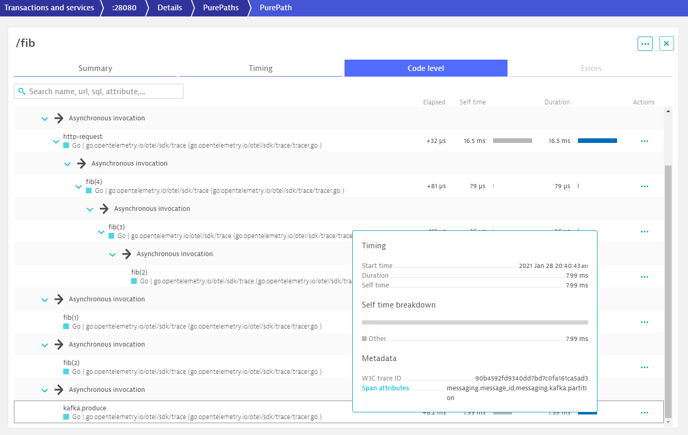
Step 2: Introduce OpenTelemetry via instrumentation library
- Investigate the additional PurePath Node. What additional data does it potentially offer?
- Introduce - like in LESSON 02 - the necessary configuration settings in order to capture that information
- Optionally you can also make that data available via Request Attribute
- Why is not necessarily EVERY Span Attribute also a candidate for a Request Attribute?
You've arrived
- You have successfully instrumented Kafka Client communication without modifying the original library.
With LESSION 02 we actually overshot. First of all, we had to modify the existing source code of the Fibonacci Calculator. This is rarely possible for third party libraries. But even then you'd rather prefer to use the original libraries instead of patching them. Second, our solution traces ALL the invocations of the Calc function. Trace sizes easily explode given a sufficiently high input value.
Prerequisites
- You have completed the previous task
Instrumentation Libraries - Shut down
fib.exeusingCtrl-Cwithin your Terminal if you haven't done so already.
Step 1: Restore the original Fibonacci Calculator and create a Wrapper
- Delete Lines 12 - 48 in
fibonacci.go. We are getting rid of our patched version of of the Fibonacci Calculator - Delete Lines 14 and 56 in
fibonacci.go. What we're getting is the original source code of the Fibonacci Calculator - and a bit more on top - Press
Ctrl-Sin order to save the changes you've made infibonacci.go - The changes we've made to
fibonacci.goagain are creating errors withinmain.go. - Delete Line 45 and Line 65 in
main.go. Between these two lines is yet another version of the functionFibServer - Delete Lines 26-43 in
main.go. We're getting rid of the old version ofFibServer - Press
Ctrl-Sin order to save the changes you've made inmain.go - Shut down
fib.exeusingCtrl-Cwithin your Terminal if you haven't done so already. - Compile the program using the command line
go build'. This produces a file namefib.exewithin the current directory. - Launch
fib.exevia your current Terminal - Use either your Browser or
curl http://localhost:28080/fib?n=3within a new Terminal to access your new HTTP Service
You've arrived
- The PurePath you just created does no longer report a Span for every single invocation of the function
Calc. Most importantly the code of the original Fibonacci Calculator remains untouched. You've managed to create an instrumentation library that performs the necessary work. 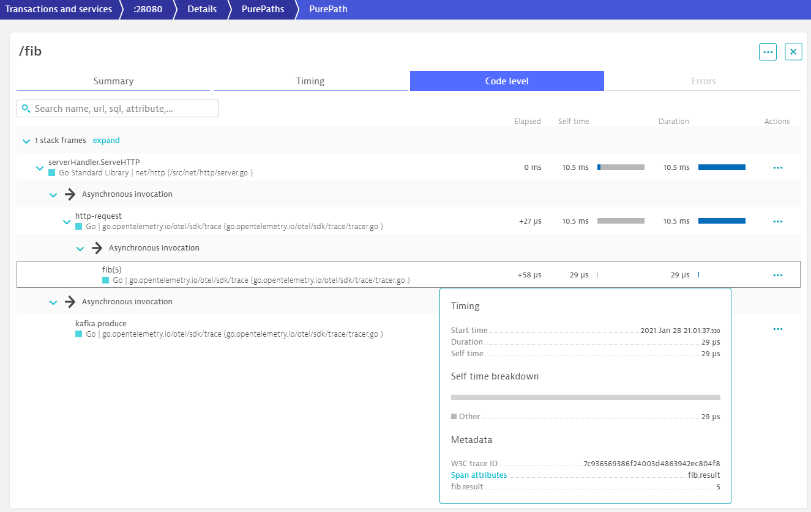
Apart from getting deeper insight into what's going on within an application on a transactional level, OpenTelemetry also covers the ability to gather metrics. In this lesson we learn how to enable the OpenTelemetry Metric Exporter for Dynatrace.
Prerequisites
- You have completed the previous task
Creating Instrumentation Libraries
Step 1: Initialize the Dynatrace Metrics Provider for OpenTelemetry
- Delete Line 18 and Line 20 in
main.go. This wayinitMetricsProvider()will get called upon process start - Function
maininmain.goshould now look like this:
func main() {
if err := initGlobalTracer(nil); err != nil {
panic(err)
}
initMetricsProvider()
http.HandleFunc("/fib", FibServer)
http.HandleFunc("/favicon.ico", faviconHandler)
http.ListenAndServe(":28080", nil)
}
- Press
Ctrl-Sin order to save the changes you've made inmain.go - Line 21 within
metrics.gorequires the endpoint URL for metric ingest of your Dynatrace environment to be specified- You can find the host name of your Dynatrace environment in the address line of your browser when navigating within the Dynatrace WebUI
- Example:
https://abc12345.sprint.dynatracelabs.com/api/v2/metrics/ingest
- Line 18 within
metrics.gorequires you to specify an API Token. It is required for authentication.- In the Dynatrace WebUI navigate to
Settings>Integration>Dynatrace API - Generate a new API Token here
- The access scope (= permissions) needs to include
Ingest metrics - The name of the API Token can get chosen freely
- You can now copy the API Token to your clipboard and paste into the String on Line 18 of
metrics.go - 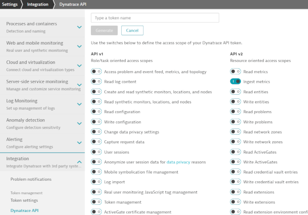
- In the Dynatrace WebUI navigate to
- Shut down
fib.exeusingCtrl-Cwithin your Terminal if you haven't done so already. - Compile the program using the command line
go build. This produces a file namefib.exewithin the current directory. - Launch
fib.exevia your current Terminal - In your Browser or via
curlcreate a series of requests like these. Feel free to repeat some of these requests a couple of timeshttp://localhost:28080/fib?n=1http://localhost:28080/fib?n=2http://localhost:28080/fib?n=3http://localhost:28080/fib?n=4http://localhost:28080/fib?n=5http://localhost:28080/fib?n=6http://localhost:28080/fib?n=7http://localhost:28080/fib?n=8http://localhost:28080/fib?n=9http://localhost:28080/fib?n=10http://localhost:28080/fib?n=11
- Within the Dynatrace WebUI select
Create custom chartin the left hand side menu - On top of your screen you're getting the option to
Analyze multidimensional metrics from Prometheus, StatsD and others channels right on your dashboards. Click onTry it outin order to launch theData explorer. - 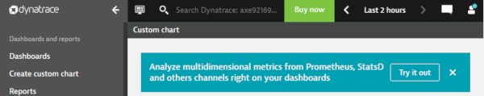
- Click on the Dropdown box
Filter metrics byand type inotel. You should now be able to select the metricotel.fibonacci.iterations. - Click on the input box
Split by. You should be able to selectinputhere. - For this specific kind of metric it makes sense to select
Pieas the Visualization on the right hand side menu - 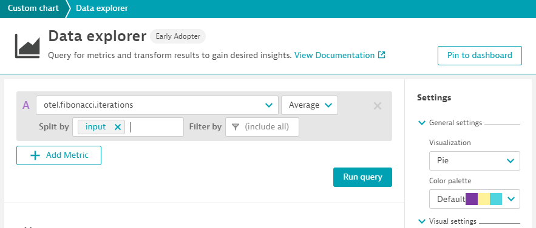
- Click on
Run query
You've arrived
- You have successfully reported a metric via OpenTelemetry and charted it in Dynatrace
- Like with additional Spans you can expect third party libraries to already have chosen a set of metrics for you, that are worth reporting.
- The only job left for you is to initialize the Dynatrace Exporter.